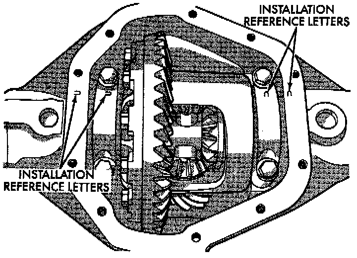
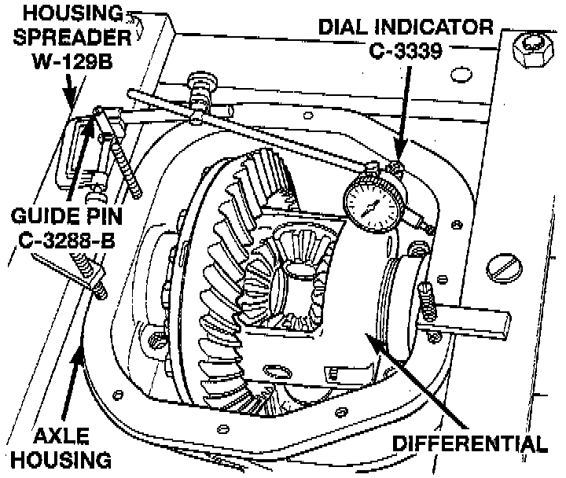
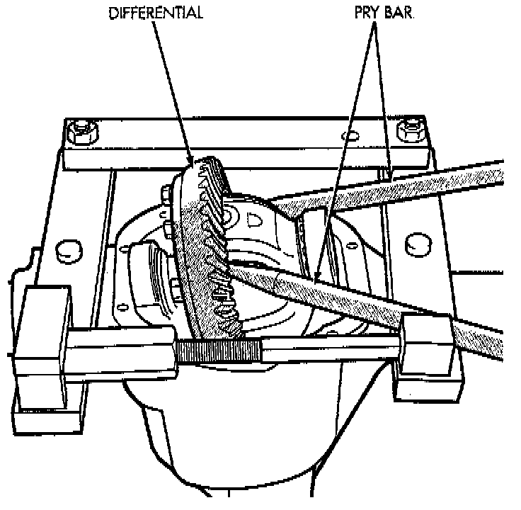
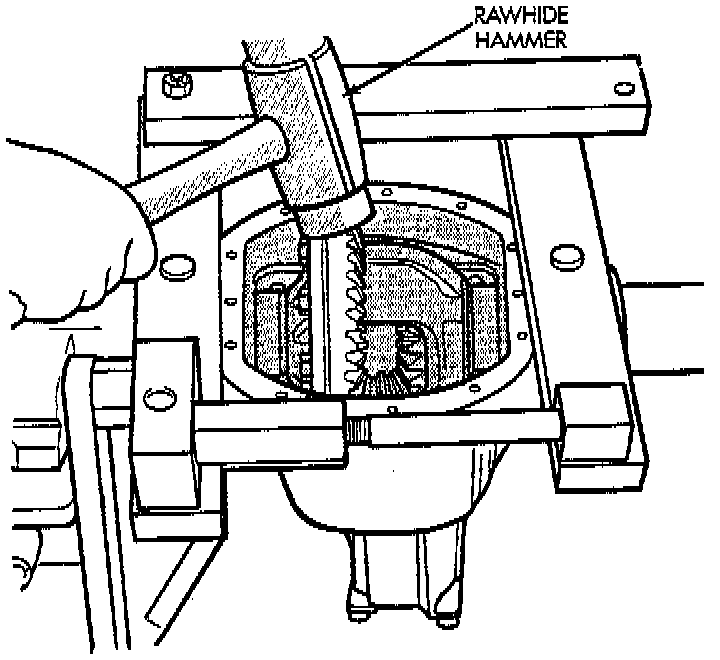
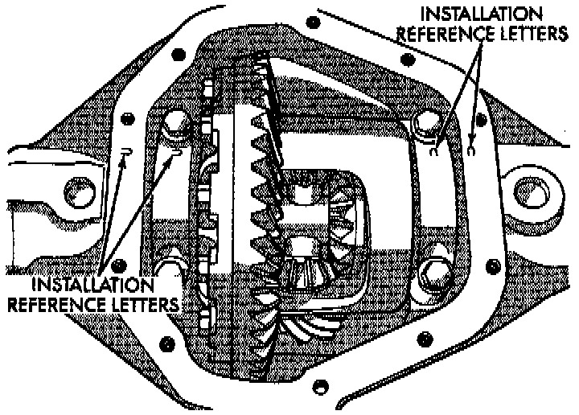

Rear Axle - 216RBI
REMOVAL1. Remove axle shafts.

2. Note the orientation of the installation reference letters stamped on the bearing caps and housing machined sealing surface.
3. Remove the differential bearing caps.

4. Position Spreader W-129-B, or equivalent with the tool dowel pins seated in the locating holes.
5. Install the hold down clamps and tighten the tool turnbuckle finger-tight.
6. Install a Guide Pin C-3288-B, or equivalent at the left side of the differential housing. Attach dial indicator to housing pilot stud. Load the indicator plunger against the opposite side of the housing and zero the indicator.
7. Spread the housing enough to remove the case from the housing. Measure the distance with the dial indicator.
CAUTION: Do not spread over 0.50 mm (0.020 inch). If the housing is over-spread, it could be distorted or damaged.
8. Remove the dial indicator.

9. Pry the differential case loose from the housing. To prevent damage, pivot on housing with the end of the pry bar against spreader.
10. Remove the case from housing. Mark or tag bearing cups and outboard shim(s)/spacer(s) (selected thickness) to indicate which side they were removed from.
INSTALLATION
1. Position Spreader W-129-B, or equivalent with the tool dowel pins seated in the locating holes. Install the hold down clamps and tighten the tool turnbuckle finger-tight.
2. Install a Guide Pin C-3288-B, or equivalent at the left side of the differential housing. Attach dial indicator to housing pilot stud. Load the indicator plunger against the opposite side of the housing and zero the indicator.
3. Spread the housing enough to install the case in the housing. Measure the distance with the dial indicator.
CAUTION: Do not spread over 0.50 mm (0.020 inch). If the housing is over-spread, it could be distorted or damaged.
4. Remove the dial indicator.
5. Install differential and outboard shim(s)/spacer(s) (selected thickness) in housing.

6. Install case in the housing. Tap the differential case with a rawhide or rubber mallet to ensure the bearings are fully seated in the differential housing.
7. Remove the spreader.

8. Install the bearing caps at their original locations. Tighten the bearing cap bolts to 77 Nm (57 ft. lbs.) torque.
9. Install axle shafts.